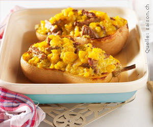

Gratinierter Kürbis mit Kalbsgeschnetzeltem
5 von 6Backofen auf 170 °C vorheizen. Einen Kürbis längs halbieren. Kerne entfernen. Kürbisfleisch herausschneiden, dabei einen Rand von ca. 5 mm stehen lassen. Kürbishälften leicht salzen und in eine Gratinform legen. Mit Bouillon umgiessen, bis das Gemüse zur Hälfte in Bouillon ist. Gratinform zudecken und Kürbis in der Ofenmitte ca. 30 Minuten bissfest garen.
Inzwischen herausgelöstes Kürbisfleisch grob hacken. Zwiebeln fein hacken. In etwas Öl dünsten. Kürbis beigeben und ca. 10 Minuten mitdünsten. Rahm beigeben und etwas einkochen lassen. Kürbismasse aus der Bratpfanne nehmen. Mit Curry, Salz und Pfeffer abschmecken.
Kalbsgeschnetzeltes mit Salz und Pfeffer würzen. Portionenweise im restlichen Öl unter gelegentlichem Rühren anbraten. Unter die Kürbismasse heben und in die Kürbishälften verteilen. Ofentemperatur auf 220 °C erhöhen und die gefüllten Kürbishälften ca. 5 Minuten gratinieren.
